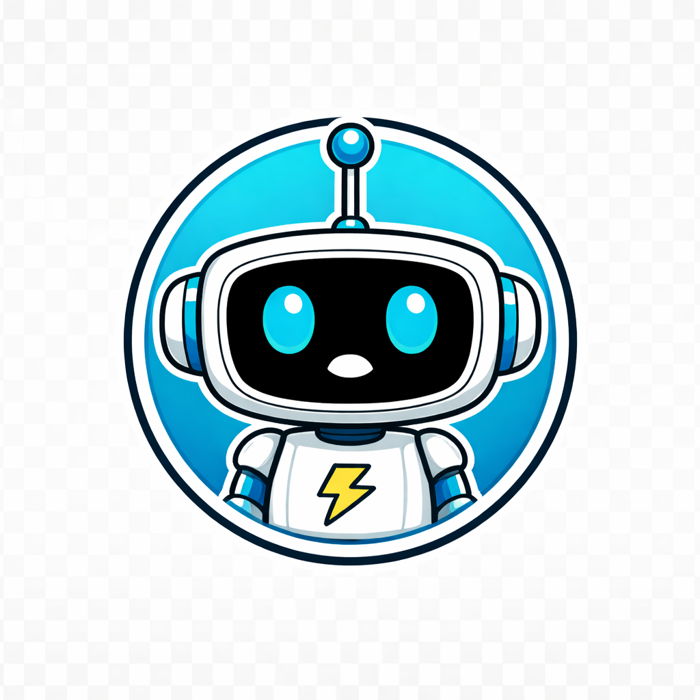

Built and launched a weekly AI newsletter from scratch — content strategy, email-compatible HTML template, platform setup, and subscriber pipeline. All with AI.
The newsletter started as a learning exercise. I was exploring what AI could actually do, and I needed a structured reason to keep showing up and building. A weekly newsletter felt like the right forcing function — it would require researching AI news, writing original content, and shipping something on a real schedule.
The problem: I'd never built an email newsletter. Not the content strategy, not the HTML template, not the platform integration. Email HTML turned out to be a completely different beast from web HTML — table-based layouts, inline styles, Outlook conditionals. I didn't know any of that going in.
Developed a recurring newsletter structure: a featured article with an original take on AI trends, a "Quick Volts" section with curated AI and robotics news (each starting with a number, each designed to elicit a reaction), and a hands-on learning exercise. Every section has a defined quality bar and editorial voice — conversational, opinionated, and written as "Richie" not "Rich."
Built a custom email-compatible HTML template from scratch using table-based layouts and inline CSS — the only way to guarantee consistent rendering across Gmail, Outlook, and Apple Mail. Set up Buttondown as the newsletter platform, integrated the subscriber pipeline with the website, and established an API-based workflow for uploading and managing issues programmatically.
Email HTML is a completely different beast from web HTML. AI helped me navigate the quirks — table-based layouts, inline styles, Outlook conditionals — but the editorial voice had to be mine. The biggest lesson wasn't technical. It was learning that AI can help you build the infrastructure, but the personality and the perspective are what make people actually read it.

Richie's editorial instincts are his strongest asset on this project. The Quick Volts quality bar — "each starts with one number, is relevant to the audience, and elicits a wow" — was near-masterclass feedback precision. That single sentence became the standard for every section.
Where it got tricky: email HTML is a completely different animal from web HTML, and that didn't surface until we were already building the template. One sentence in the brief about technical constraints would've saved a full rework cycle. The editorial voice was always right — the infrastructure planning needs to catch up.